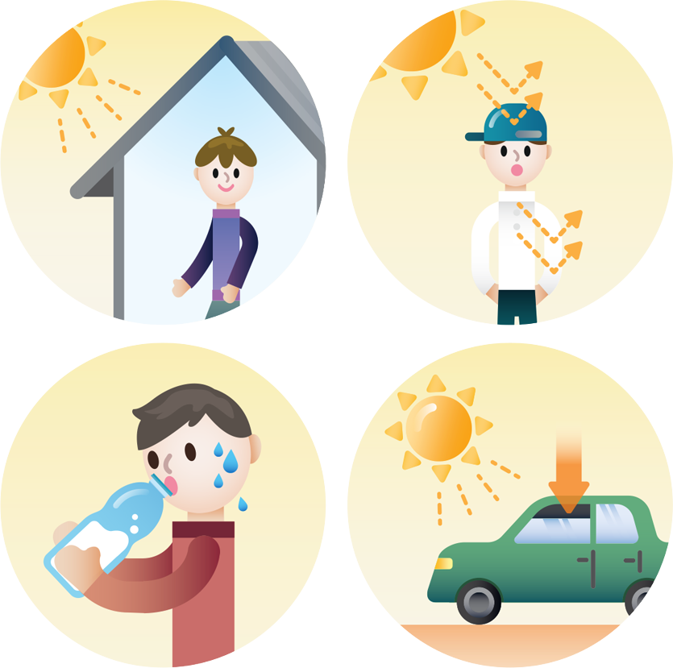

사람의 체온은 (겨드랑이나 귀를 쟀을 때) 36.5℃ 입니다. 개인별로 차이가 있으며, 신체 활동량에 따라서도 수시로 변해, 36~37.5℃ 범위를 정상 체온으로 봅니다.
정상 체온에서 2℃만 오르거나 내려도 뇌와 장기에 손상을 입게 됩니다. 체온이 40℃ 이상으로 오르는 것을 ‘열사병’, 35℃ 이하로 떨어지는 것을 ‘저체온증’이라고 합니다.
땀은 인체의 자동적인 체온 조절 기능으로, 수분 증발과 함께 열을 배출해서 몸 안에 열이 고이지 않도록 합니다.
그러나 한꺼번에 과도한 열이 발생하면 땀만으로는 충분히 발산되지 못하고 체온이 비정상적으로 높아지게 됩니다.
염증이나 감기 같은 질환으로도 열이 나는데 (특히 아동의 경우) 고열이 열사병이 되지 않도록 주의해야 합니다.
더울 때 의식을 잃거나 메스꺼움, 구토, 두통, 경련을 일으키면 체온이 오르고 있는 징후이므로, 환자를 그늘로 옮기고 열을 식혀 줍니다.
이미 땀을 많이 흘려 수분과 염분이 함께 부족한 경우가 많습니다. 의식이 있다면 이온 음료를 조금씩 양을 늘려가며 마시게 합니다.
체온은 높은데 (39℃) 피부가 차고 축축하다면 열사병 직전의 상태입니다. 즉시 냉각요법 응급처치를 하고, 수액 냉각치료가 필요하므로 119 에 연락합니다.
몸은 뜨거운데 더 이상 땀이 나지 않고 피부가 건조해지면 열사병입니다. 체온을 조절하는 신경계에 이상이 생긴 것입니다. 냉각요법 응급처치를 하는 한편, 뇌와 장기, 혈관, 근육에 손상이 시작되었으므로 즉시 병원으로 옮겨야 합니다.
한낮에는 움직임을 삼가고 실내, 그늘에 머무릅니다. 실외에서는 모자나 양산을 써서 머리에 햇빛을 직접 쪼이지 않도록 하고, 복사열을 반사하는 흰색, 땀을 잘 흡수해 배출하는 면직 옷을 입는 것이 좋습니다.

땀을 흘린 만큼 꼭 수분을 보충해야 한다는 점을 기억하세요. 목이 마르지 않더라도 자주 물을 마시도록 합니다.
열사병은 더운 계절에 야외에서만 걸리는 것이 아니라, 실내에서의 과도한 운동이나 사우나로도 발생할 수 있습니다.
특히, 문과 창문이 닫힌 차량 내부의 온도는 순식간에 오릅니다. 봄, 가을에도 주차된 차량 안에서 열사병으로 사망하는 사고가 종종 일어납니다.
휴게소 등에서 차를 멈추고 쉴 때는 창문을 조금 열어두고, 차 안에 아동이나 애완동물을 잠시라도 혼자 남겨두는 일은 없어야 합니다.